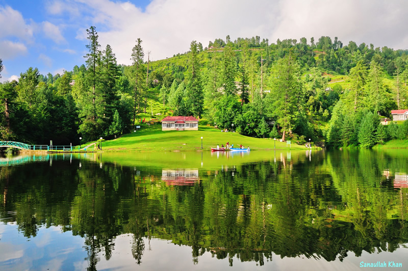
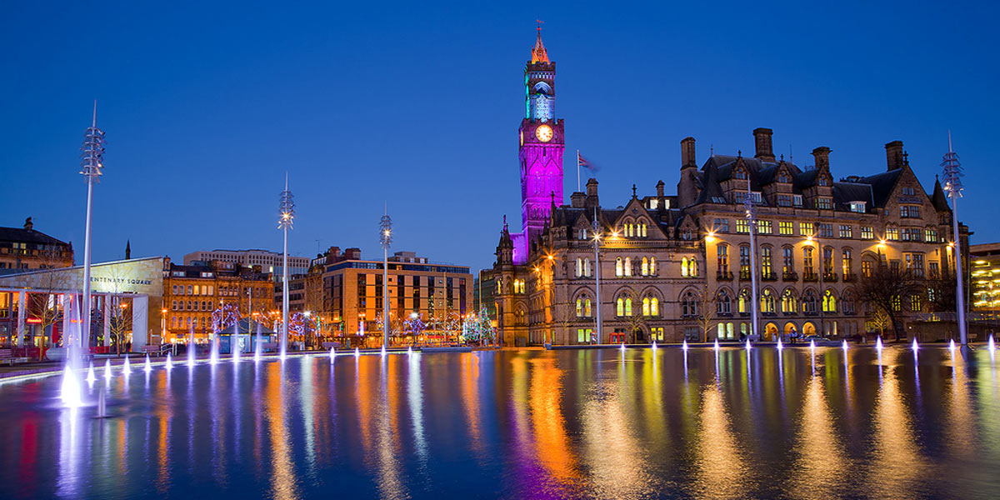

About Me
Hello and welcome to my website! My name is Haroon Ahmed, I was born on the 13th of January 1998 and so I am currently 18 years old. I was born in the city of Mirpur in Pakistan and came to the UK aged 5. I attended Lapage Primary School and Laisterdyke Academy which is where I completed my GCSEs and A-levels. I love to watch and play football and also video games with FIFA and Grand Theft Auto being my favourite. Currently I am studying Computer Science at the University of Bradford. At the moment I am currently in the first of four years, the third of which is a placement year.

